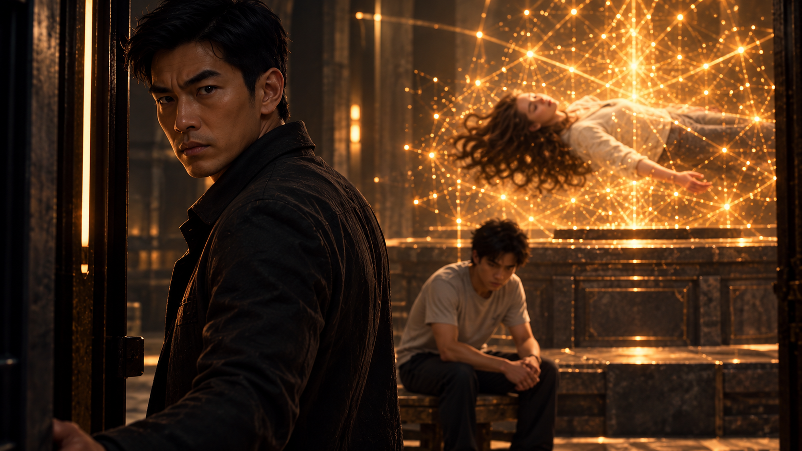
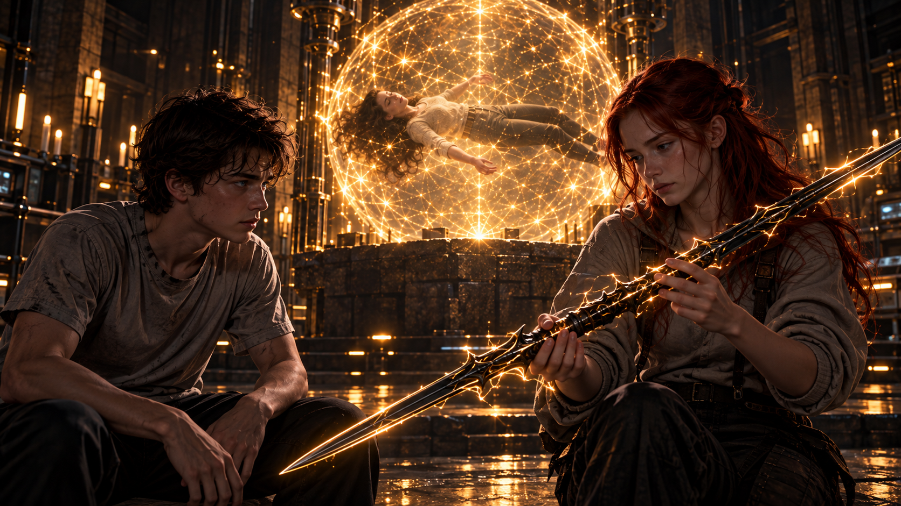

WHITE MAGIC ART STUDIO
第十二章
柴克的父母
鹽湖城．東湖地下教會
金色的星雷，在昏暗的密室中緩緩流轉。
瑞秋靜靜漂浮在結界中央。
一道道細小的金色電流沿著她的身體流動，時而交織成星辰般的光點，時而又隱沒在她的衣袖與髮絲之間。
沒有劇烈的能量波動。
沒有任何失控的跡象。
只有一種近乎不可思議的平靜。
彷彿這份守護早在十五年前就已經被安排妥當，只為等待今天的到來。
柴克站在結界外。
他已經看著母親很久了。
這幾天發生的事情太多，多到他甚至有些記不清楚，自己上一次看見母親睜開眼睛是什麼時候。
從前，他總覺得瑞秋管得太多。
晚回家十分鐘要打電話，出門忘記帶外套要被念，連冰箱裡剩下的牛奶是誰喝完的，她都能追查得一清二楚。
現在，他卻希望她能醒過來，再為這些無聊的小事唸他一次。
身後傳來腳步聲。
雷走了進來。
柴克沒有回頭。
「她什麼時候會醒？」
「不知道。」
雷回答得很直接。
「傑西檢查過。星雷正在保護她，但我們不知道它什麼時候會解除。」
柴克點點頭。
又安靜下來。
雷走到他旁邊。
叔姪兩人隔著金色結界，看著瑞秋。
「你剛剛答應我的。」
柴克突然說。
雷知道他在說什麼。
「嗯。」
「十五年前的事。」
柴克轉過頭，望著他。
「全部。」
雷沉默片刻，拉來一張椅子坐下。
「知道真相，不見得會讓你好受。」
柴克也坐了下來。
「相信我，這種感覺我已經很熟悉了。」
雷看了他一眼，終究沒有再勸。
「好。」
他望向結界裡沉睡的瑞秋，像是在整理一段塵封已久的記憶。
「十五年前，我和你父親、傑西一起接到一項任務。當時，有個惡魔聚集的地方出現了異常。」
「魔神？」
這個名字，柴克今天已經聽過太多次。
「對。但那時候，我們還不知道自己面對的是什麼。」
雷的聲音低了下來。
「等我們發現不對勁，已經太晚了。那東西遠比我們遇過的任何惡魔都強大。」
他停頓了一下。
「我們殺不死牠。」
柴克想起紐約廢棄教堂裡，那張與父親一模一樣的臉。
「所以爸爸把牠封進了自己的身體。」
雷微微一怔。
「看來，牠真的告訴你了。」
柴克點頭。
「你父親最後使用了一種禁術。」
「血祭封印。」
雷抬起眼睛。
柴克的腦海中，立刻浮現自家地下室裡那本黑色古書。
雷從外套內側取出那本書，放在兩人之間。
「果然...」
柴克看著熟悉的封面。
「所以……這本書是爸爸的？」
「嗯。」
「鮑勃那天就是在找它？」
「應該是。」
雷的手指停在書封上。
「如果十五年前，我就知道詹姆斯手裡有這本書……」
他沒有立刻說下去。
「我一定會把它燒了。」
柴克低下頭。
過了片刻，他才問：
「血祭封印，到底是什麼？」
雷沒有急著回答。
「所有聖術師的力量，都源自拉比。」
他抬起手，指向結界裡那些緩緩流動的金色星光。
「你可以把祂想成太陽，而我們是月亮。月亮本身不會發光，卻能反射太陽的光芒。」
柴克望向母親身邊，如星辰般閃爍的金色雷電。
「所以聖術師的力量，其實不是自己的？」
「至少不是憑空產生的。」
雷回答。
「我們透過與拉比的連結施展聖術。一般而言，消耗的主要是體力和精神，休息之後就能逐漸恢復。」
「但有些聖術不同。」
他的語氣漸漸凝重。
「它們超越了六大元素原有的界線，甚至能干涉生命、死亡，以及這個世界的秩序。」
「要使用這樣的力量，付出的就不只是體力。」
雷看著柴克。
「我們稱它們為禁術。」
柴克沉默片刻。
「血祭封印就是其中一種？」
「嗯。」
雷將視線移回那本古書。
「它以施術者自己的生命為代價，建立一道幾乎無法從外部破壞的封印。」
柴克沒有說話。
他只是看著書封。
那本書曾經放在家裡的地下室，離他那麼近。
他卻直到今天，才知道它意味著什麼。
「所以……」
柴克緩緩開口。
「剛剛那個東西告訴我的，都是真的？」
「我說過。」
雷望著他。
「最誘人的謊言，不是說假話。」
「而是扭曲真理。」
柴克想起那個人用父親的聲音，對自己說過的每一句話。
那些話之所以讓他動搖，正是因為其中有太多他渴望相信的事。
「可是……」
柴克抬起頭。
「如果血祭封印強大到必須用生命交換，為什麼魔神還能用爸爸的身體行動？甚至跟我說話？」
他望向雷。
「牠不是應該被封印了嗎？」
「照理說，是。」
雷的眉頭緊鎖。
「這也是我們最沒料到的事。」
他翻開古書，停在其中一頁，將它轉向柴克。
「血祭封印雖然強大，卻不是完全沒有破解的方法。」
柴克低頭閱讀。
「『千人自願獻上的生命，或可削弱封印；唯有心甘情願的神子之血，方能使其完全解除。』」
他讀完後，猛然抬頭。
「等等……你的意思是……」
「鮑勃。」
雷的聲音冷了下來。
「那傢伙不知道用什麼謊言，讓那麼多人甘願為他獻出生命。」
他握緊拳頭。
「他們一步步削弱了你父親留下的封印。」
柴克再次看向書頁。
「所以，爸爸的封印並不是自己失效的。」
「不是。」
雷搖頭。
「是有人刻意破壞了它。」
密室裡安靜下來。
柴克望著那段文字，忽然想起另一個問題。
「叔叔。」
「嗯？」
「魔神到底是什麼？」
柴克皺起眉頭。
「為什麼連你們都對付不了？」
「牠是墮落天使。」
雷的表情變得嚴肅。
「牠的存在，得從更久以前說起。」
他停頓片刻。
「牠原名叫路西法[cite: 1]，後人都稱他為-撒旦[cite: 1]。」
柴克安靜下來。
「萬魔之首，也是所有惡魔力量最初的源頭。」
雷望向結界裡的金色星光。
「後來，拉比來到這個世界。祂以自己為代價，施展了最偉大的聖術——贖罪祭。」
「祂承擔了人類因罪所要面對的刑罰與死亡，而那份力量，也撕裂了撒旦。」
雷停了下來。
「接下來的故事，你或許聽過。」
柴克沒有回答。
「第三天，拉比從死亡中復活，回到了祂的國度。」
雷繼續說：
「但撒旦並沒有因此徹底消失。」
他伸出手。
黑色菱形晶體在掌心上方緩緩浮現。
阿法。
細小的金色雷電沿著晶體邊緣流動。
「牠的力量被撕裂成數個碎片，其中一些留在了這個世界。」
「古代典籍將這些承載巨大邪惡力量的碎片，稱為『撒旦的碎片』。」
柴克看著阿法。
「所以……魔神就是其中一個碎片？」
「更準確地說，是碎片透過某種獻祭儀式，被釋放成擁有獨立意志的存在。」
「就像撒旦的分身？」
「你可以這麼理解。」
柴克沉默了一會兒。
「那克里斯之前提過的魔皇，還有魔君呢？」
「那是另一種情況。」
雷收起阿法。
「當人類受到撒旦碎片的影響，甚至主動接受那股力量，就可能誕生出更高階的邪惡存在。」
「魔皇與魔君，都與此有關。」
柴克慢慢點頭。
那些原本毫無關聯的名字，終於開始拼湊成一個可怕的輪廓。
「所以，我在紐約遇見的……」
「就是魔神。」
雷回答。
「牠的封印已經被削弱。更糟的是，牠現在使用的，仍然是你父親的身體。」
柴克垂下眼睛。
他想起那張臉。
還有那隻向自己伸來的手。
「有辦法對付牠嗎？」
雷沉默片刻。
「我們無法徹底消滅牠。」
柴克的心沉了下去。
「但至少，有辦法將牠重新壓制回碎片的型態。」
「什麼辦法？」
雷看著他。
「你。」
柴克愣住。
「古代典籍記載，能從根本上壓制魔神化身的，只有翼聖術師的力量。」
雷停頓了一下。
「可是十五年前，你才剛滿兩歲。」
柴克沒有說話。
「你父親很清楚，你根本不可能承受那樣的戰鬥。當時其他五位翼聖術師，也幾乎全都下落不明。」
雷的聲音漸漸低了下來。
「所以，他只能自己做出選擇。」
柴克望向那本黑色古書。
「血祭封印。」
雷點頭。
一時間，兩人都沒有再說話。
過了很久，柴克才像是忽然想起什麼。
「等等……」
他重新翻看書頁。
「魔神在紐約對我說過一句話。」
雷看向他。
「牠說，只需要我的願意，還有幾滴血，就能讓牠自由。」
雷的神情瞬間變了。
「神子之血……」
柴克望著他。
「可是我不是神之子。」
「你不是。」
雷回答。
「但你體內的雷翼，是神之子——聖術師拉比的一部分。」
柴克低頭看著自己的雙手。
他終於明白，為什麼魔神一直想要他主動答應。
那不是單純的誘惑。
而是解除封印所必須滿足的條件。
「所以……」
柴克的聲音有些發緊。
「爸爸早就知道這件事？」
雷點頭。
「他知道，總有一天，你可能會成為唯一能夠壓制魔神的人。」
「所以他先把魔神封住，等我長大……」
柴克停了一下。
「等我準備好，再由我自己決定，要不要解開封印。」
雷沒有回答。
柴克看著他。
「然後，由我來對付牠。」
「嗯。」
雷的聲音很輕。
「壓制那個奪走你父親的東西。」
柴克低下頭。
「而我真的差一點就...」
雷站了起來緩緩走向門口，
「然而你父親留給我們一個承諾，」
「但他沒有留下說明書，告訴我們每一年該怎麼當你的家人。」
柴克看著他的背影。
雷停在門口。
「我們只能自己決定。」
「有些決定可能做對了。」
「有些可能沒有。」
「所以如果你生氣。」
他沒有回頭。
「你有資格。但你要記住，安德烈家永遠都以家人為榮...」
說完，雷打開門。
「等等...雷叔叔！」
雷離開密室。
門輕輕關上。
柴克坐在原地。
第一次。
沒有人要求他理解大人的苦衷。
也沒有人要求他原諒。
只是把真相放到他面前。
讓他自己決定。

幾分鐘後門再次打開。
柴克抬起頭。
安娜探頭進來。
「雷叔叔走了？」
「嗯。」
她走進密室。
看了一眼柴克，又看了一眼仍然沉睡在星雷中的瑞秋。
「你還好嗎？」
柴克調整坐姿。
「我現在已經不知道這句話要怎麼回答了。」
安娜在他旁邊坐下。
「那就不要回答。」
兩人一起看著母親。
沉默了一會。
柴克忽然開口。
「安娜。」
「嗯？」
「妳是什麼時候知道的？」
「知道什麼？」
「這些。」
柴克指了指四周。
「聖術師、惡魔、拉比……我們家的事情。」
安娜想了一下。
「比你早很多。」
「這我知道。」
柴克沒好氣地說。
「我現在比較想知道為什麼全世界都比我早。」
安娜笑了一下。
「其實我一開始知道的也不多。」
「克里斯知道得比我多。」
「媽媽呢？」
「她一直都知道。」
柴克看向瑞秋。
這幾天。
他已經不只一次覺得自己根本不認識母親。
「所以她也是聖術師？」
「不是。」
安娜搖頭。
「媽媽是普通人。」
柴克看著結界裡那些環繞母親的金色雷電。
「可是她一直都知道聖術師的事情？」
「嗯。」
「為什麼？」
安娜轉頭看他。
「因為她以前的工作。」
「什麼工作？」
安娜沒有立刻回答。
反而露出一個有點奇怪的笑。
柴克皺眉。
「妳幹嘛？」
「我只是在想你等等的表情。」
「到底什麼？」
安娜稍微靠近。
「CIA。」
柴克看著她。
「……什麼？」
「中央情報局。」
「我知道 CIA 是什麼！」
柴克差點從椅子上站起來。
「我是指媽媽？！」
安娜終於笑出來。
「嗯。」
她指向結界裡的瑞秋。
「她。」
柴克轉頭。
看看母親。
又看看安娜。
再看看母親。
「不可能。」
「資深特別探員。」
「妳在騙我。」
「我幹嘛拿這個騙你？」
「她連我晚十分鐘回家都要打三通電話。」
「所以才很適合當情報員啊。」
柴克張了張嘴。
竟然找不到反駁的地方。
腦中卻突然閃過那一天。
母親握著槍。
面對惡魔時沒有半點遲疑的樣子。
「……好吧。」
柴克重新坐下。
「突然合理很多。」
安娜笑了。
「媽媽以前執行任務的時候，有一個秘密代號。」
「什麼？」
「Eileen。」
柴克皺眉。
「艾連？」
安娜點頭。
柴克下意識看向她。
「等等。」
「嗯？」
「妳的術器名——」
安娜笑了一下。
「就是艾連。」
嗡——！
伴隨一道璀璨的金雷閃爍，那把黑金相間的細刃雙頭劍瞬間精準地憑空構建在了她的掌心之中！
柴克終於明白。
「妳用媽媽的代號替它取名？」
「嗯...說是替它取名不如說它就叫這個名字。」
安娜看向母親。
眼神慢慢柔和下來。
「因為如果沒有媽媽。」
她說。
「可能也不會有艾連。」
柴克沒有聽懂。
「什麼意思？」
安娜沉默了一會。
像是在想該從哪裡說起。
「我們的力量來自於拉比，而驅動它的，是我們的『情緒』以及最重要的....『信仰』。」
「太好了....所以要學會聖術，我不只要學會控制脾氣，還得順便當個虔誠的教徒是吧……」柴克翻了一個大大的白眼，無奈地嘆氣。
「去教會跟相信是兩回事。」
柴克安靜下來。
安娜看著自己的雙手。
「爸爸死的時候，我甚至還沒有出生。」
「所以我從小認識爸爸的方式，跟你其實沒有差很多。」
「照片。」
「故事。」
「別人口中的他。」
她停了一下。
「可是媽媽不一樣。」
柴克看向瑞秋。
「她真的失去過他。」
安娜說。
「她知道爸爸不會回家。」
「知道自己要一個人把我們帶大。」
「也知道自己原本想像的人生，再也不會發生。」
柴克沒有說話。
「我以前一直不明白。」
安娜低聲說。
「即使發生這樣的事她為什麼還能這麼堅強的照顧家庭...」
柴克轉頭。
安娜仍然看著母親。
「但她只說：『因為拉比永遠都會站在我們這邊，不需要怕！』」
「但我不一樣。」
「我可能會生拉比的氣。」
「可能會問祂，為什麼偏偏是爸爸。」
「為什麼明明相信祂，這種事情還是會發生。」
「但...你也看到了...她每天還是起床。」
「工作。」
「照顧我們。」
「陪我們吃飯。」
「在我們生病的時候守著。」
「知道自己拼不過惡魔但還是拿著槍戰鬥只為了爭取救你的時間。」
「她不是因為知道事情最後一定會變好，才去做那些事。」
安娜看著母親。
「我知道母愛很偉大，但信仰讓她更堅強了。」
柴克沒有說話。
「我以前一直覺得。」
安娜繼續說。
「信仰應該是你先得到一個答案。」
「證明拉比真的在。」
「證明祂真的會幫你。」
「然後你才相信。」
「可是媽媽不是。」
安娜搖頭。
「她是因為先相信，所以選擇怎麼活。」
這句話讓柴克安靜了很久。
「所以妳就相信了？」
他問。
安娜想了一下。
「沒有那麼快。」
「我只是開始想。」
「如果媽媽在經歷這些事情以後，還願意這樣相信……」
她低頭看著自己的手。
「那我想知道。」
「她相信的拉比，到底是誰。」
柴克著著她。
「所以我開始學她。」
安娜說。
「不是學她禱告的樣子。」
「也不是學她說什麼。」
「而是有些事情我明明很害怕。」
「我還是試著相信。」
「不知道答案的時候。」
「也試著相信。」
「覺得自己做不到的時候。」
「還是往前一步。」
她笑了一下。
「然後有一天。」
柴克等著。
「艾連就出現了。」
柴克愣住。
「就這樣？」
「就這樣。」
「等等。」
柴克坐直。
「所以妳不是先知道自己是術器使？」
「不是。」
「也沒有人教妳召喚？」
「沒有。」
「妳甚至不知道自己有術器？」
「完全不知道。」
柴克一臉不可置信。
安娜低頭看著手中的術器。
「後來雷叔叔才告訴我。」
「我是術器使，並告訴我如何更靈活地透過它使用聖術。」
「再加上媽親自傳授給我的特務體術技能，才有了你所看到現在的我。」

柴克伸手碰了碰劍柄。
「信仰……嗎……」
他重新看向母親。
如果拉比真的在。
那為什麼爸爸一定要死？
為什麼查德會失蹤？
為什麼媽媽現在躺在這裡？
還有——
迦勒呢？
那個名字突然從記憶深處浮上來。
柴克的手指微微收緊。
如果拉比真的愛他們。
為什麼有些人還是沒有被救回來？
他沒有問出口。
不是因為害怕安娜回答不了。
而是因為——
他自己也還不知道。
自己到底想聽見什麼答案。
叮——！
安娜的手機突然響起。
兩人同時嚇了一下。
「喂？」
安娜接起電話。
「潔西卡？」
她的表情很快變了。
「什麼？」
柴克站起來。
「怎麼了？」
安娜已經往門口走。
「亞當醒了。」
「那不是好事？」
安娜回頭。
「潔西卡說。」
「他有點不對勁。」
＊
東湖地下教會．醫療觀察室
門被推開。
柴克跟著安娜走進去。
亞當躺在病床上。
與平常那個總是停不下來的人完全不同。
安靜得令人不舒服。
潔西卡站在床邊。
傑西也在。
另一側則是一名穿著白袍的華裔女性。
「雪莉姐。」
安娜快步上前。
「他怎麼樣？」
雪莉・楊摘下手套。
「身體上的侵蝕已經清掉了。」
「黑霧沒有繼續留在他體內。」
柴克鬆了一口氣。
但雪莉沒有。
「可是？」
安娜問。
雪莉看向病床。
「他的精神狀態很糟。」
柴克也看過去。
亞當睜著眼睛。
一直盯著天花板。
「亞當？」
柴克走近。
沒有反應。
「你聽得到嗎？」
亞當的眼睛慢慢移動。
最後落在柴克身上。
「柴克……」
聲音很啞。
「嗯。」
柴克靠近一些。
我在。
亞當看著他。
很久。
「絕對不要碰到那黑霧...」
房間安靜下來。
傑西皺眉。
「那不是霧。」
亞當說。
柴克的表情變了。
「牠碰到我的時候。」
他的手開始發抖。
潔西卡立刻握住他的手。
「沒事。」
亞當卻像完全沒有聽見。
「牠進來了。」
「不是進到身體。」
他抬起另一隻手。
按住自己的胸口。
「是這裡。」
柴克沒有說話。
「那一瞬間。」
亞當的呼吸開始變快。
「我知道的每一件事。」
「我相信的每一件事。」
「全部變得像假的。」
「我知道潔西卡就在附近。」
潔西卡的眼眶瞬間紅了。
「我知道傑西牧師一定會來救我。」
「我也知道拉比……」
亞當停住。
嘴唇開始顫抖。
「可是我感覺不到。」
「什麼都沒有。」
「好像我這輩子相信的那些東西，根本從來不存在。」
柴克站在原地。
幾分鐘前。
他才剛想問安娜——
如果拉比真的在。
為什麼還會有這些事？
「各位……」
傑西深吸了一口氣，沉聲開口，
「我們必須立刻讓整個教會進入最高級別的全面戒備。」
「我們現在所面對的敵人，早已不是過去那些低階惡魔……」
「那是魔神，而牠的力量與殘忍——遠遠超出了我們過去所有的認知。」
「如果……真的是古老傳説中的魔神……」
雪莉緩緩說出了心中最深沉的擔憂，
「那麼根據古代典籍的記錄……唯一能夠徹底壓制牠的力量，只有……」
雪莉的話還沒有說完，房間裡所有人的視線，不約而同地全都集中在了柴克一個人的身上。
就在這時。
雪莉突然抬頭。
「等等。」
傑西也察覺到了。
房間裡所有燈光同時閃爍。
一下。
兩下。
轟——！
巨響從地面傳來。
整座地下教會劇烈震動。
醫療器材晃動。
牆上的燈瞬間熄滅。
緊急照明亮起。
紅光籠罩整個房間。
「怎麼回事？！」
安娜立刻擋到柴克前方。
傑西已經站起。
紫色雷光從指間跳動。
又一聲。
轟！
這次更近。
彷彿有什麼東西。
正在從外面撞擊東湖教會的防線。
傑西的表情沉了下來。
「所有人留在這裡。」
他轉身。
門外。
突然傳來一聲尖銳的咆哮。
不是人類。
柴克慢慢看向門口。
下一秒——
整座地下教會陷入了前所未有的夢靨...